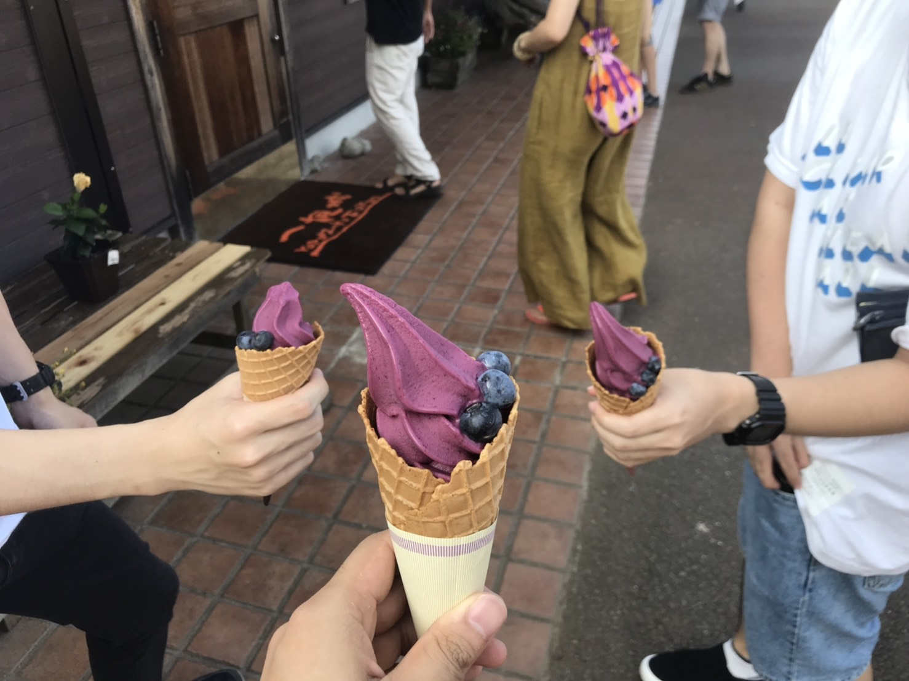
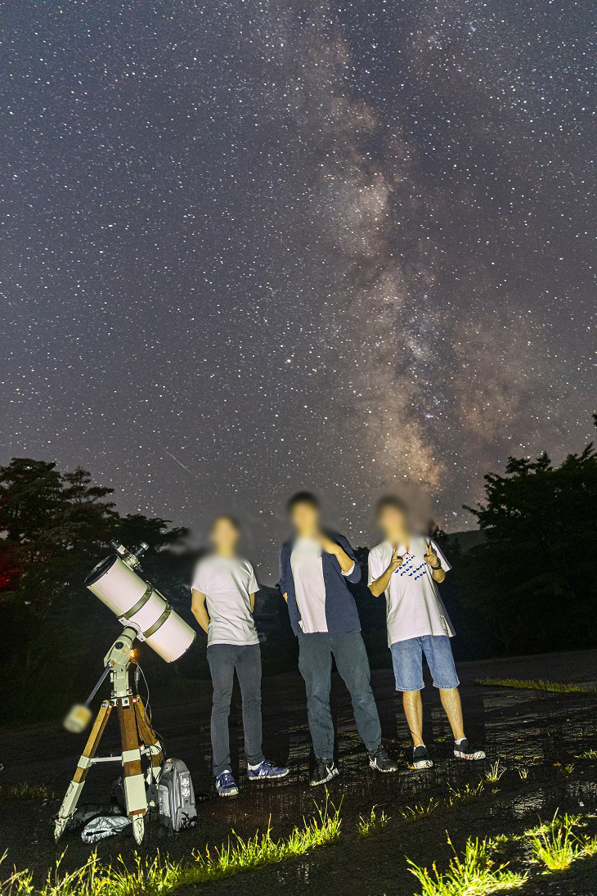
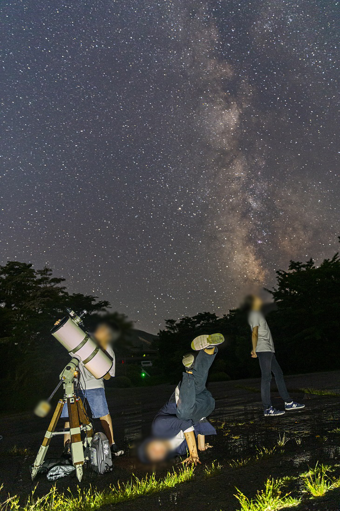
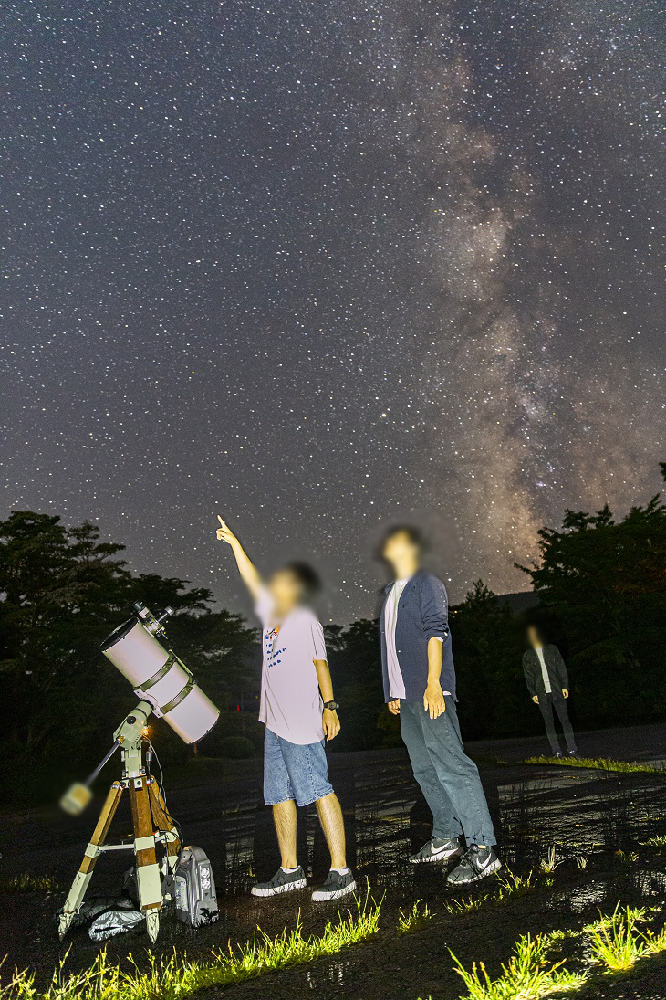
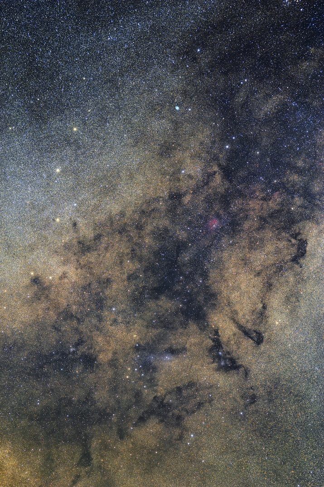
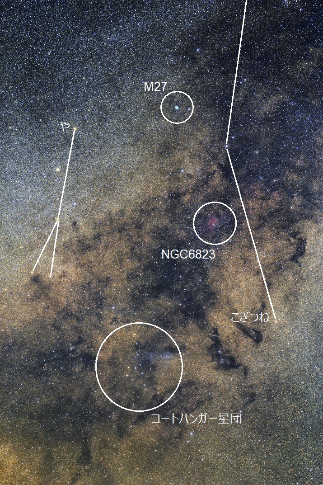

<!DOCTYPE html>
<html>

<head><meta name="generator" content="Hexo 3.8.0">
  <meta charset="utf-8">
  
  <title>【遠征記】2019年8月 天城高原 | ほしよみ大学生のブログ</title>
  <meta name="viewport" content="width=device-width">
  <meta name="description" content="あいさつこんにちは．少し時間が前後してしまいますが，先日天城高原まで三ヶ月ぶりに出向いてきたので，遠征記を書きたいと思います．">
<meta name="keywords" content="写真,天体写真,遠征記">
<meta property="og:type" content="article">
<meta property="og:title" content="【遠征記】2019年8月 天城高原">
<meta property="og:url" content="http://dabokun.github.io/2019/08/05/00000018-2019-08-03-amagi/index.html">
<meta property="og:site_name" content="ほしよみ大学生のブログ">
<meta property="og:description" content="あいさつこんにちは．少し時間が前後してしまいますが，先日天城高原まで三ヶ月ぶりに出向いてきたので，遠征記を書きたいと思います．">
<meta property="og:locale" content="ja">
<meta property="og:image" content="http://dabokun.github.io/images/favicon.png">
<meta property="og:updated_time" content="2019-08-05T04:53:54.736Z">
<meta name="twitter:card" content="summary">
<meta name="twitter:title" content="【遠征記】2019年8月 天城高原">
<meta name="twitter:description" content="あいさつこんにちは．少し時間が前後してしまいますが，先日天城高原まで三ヶ月ぶりに出向いてきたので，遠征記を書きたいと思います．">
<meta name="twitter:image" content="http://dabokun.github.io/images/favicon.png">
<meta name="twitter:creator" content="@dabo_pic">
  
  <link rel="alternative" href="/atom.xml" title="ほしよみ大学生のブログ" type="application/atom+xml">
  
  
  <link rel="icon" href="/images/favicon.png">
  
  <link rel="stylesheet" href="/css/style.css">
  <!--[if lt IE 9]><script src="//html5shiv.googlecode.com/svn/trunk/html5.js"></script><![endif]-->
  
</head></html>
<body>
  <div id="container">
    <div class="mobile-nav-panel">
	<i class="icon-reorder icon-large"></i>
</div>
<header id="header">
	<h1 class="blog-title">
		<a href="/">ほしよみ大学生のブログ</a>
	</h1>
	<nav class="nav">
		<ul>
			<li><a href="/">Home</a></li><li><a href="/categories">Categories</a></li><li><a href="/tags">Tags</a></li><li><a href="/archives">Archives</a></li><li><a href="/about">About</a></li><li><a href="/work">Work</a></li>
			<li><a id="nav-search-btn" class="nav-icon" title="Search"></a></li>
			<li><a href="https://github.com/dabokun"></a>
			</li>
			<li><a href="https://twitter.com/dabo_pic"></a></li>
			<li><a href="/atom.xml" id="nav-rss-link" class="nav-icon" title="RSS Feed"></a>
			</li>
		</ul>
	</nav>
	<div id="search-form-wrap">
		<form action="//google.com/search" method="get" accept-charset="UTF-8" class="search-form"><input type="search" name="q" class="search-form-input" placeholder="Search"><button type="submit" class="search-form-submit">&#xF002;</button><input type="hidden" name="sitesearch" value="http://dabokun.github.io"></form>
	</div>
</header>
    <div id="main">
      <article id="post-00000018-2019-08-03-amagi" class="post">
	<footer class="entry-meta-header">
		<span class="meta-elements date">
			<a href="/2019/08/05/00000018-2019-08-03-amagi/" class="article-date">
  <time datetime="2019-08-05T03:31:05.000Z" itemprop="datePublished">2019-08-05</time>
</a>
		</span>
		<span class="meta-elements author">astr0dab0</span>
		<div class="commentscount">
			
			<a href="http://dabokun.github.io/2019/08/05/00000018-2019-08-03-amagi/#disqus_thread" class="article-comment-link">Comments</a>
			
		</div>
	</footer>
	
	<header class="entry-header">
		
  
    <h1 class="article-title entry-title" itemprop="name">
      【遠征記】2019年8月 天城高原
    </h1>
  

	</header>
	<div class="entry-content">
		
		
		<div id="toc" class="toc-article">
			<p class="toc-title">目次</p>
			<ol class="toc"><li class="toc-item toc-level-3"><a class="toc-link" href="#あいさつ"><span class="toc-number">1.</span> <span class="toc-text">あいさつ</span></a></li><li class="toc-item toc-level-3"><a class="toc-link" href="#大学→一夜城→伊東マリンタウン"><span class="toc-number">2.</span> <span class="toc-text">大学→一夜城→伊東マリンタウン</span></a></li><li class="toc-item toc-level-3"><a class="toc-link" href="#伊東マリンタウン→天城高原GC"><span class="toc-number">3.</span> <span class="toc-text">伊東マリンタウン→天城高原GC</span></a></li></ol>
		</div>
		
		<h3 id="あいさつ"><a href="#あいさつ" class="headerlink" title="あいさつ"></a>あいさつ</h3><p>こんにちは．少し時間が前後してしまいますが，先日天城高原まで三ヶ月ぶりに出向いてきたので，遠征記を書きたいと思います．</p>
<a id="more"></a>
<h3 id="大学→一夜城→伊東マリンタウン"><a href="#大学→一夜城→伊東マリンタウン" class="headerlink" title="大学→一夜城→伊東マリンタウン"></a>大学→一夜城→伊東マリンタウン</h3><p>今回は研究室の友人を二人連れていくということで，待ち合わせは大学近くの駅前に．2時半頃に出発して，東名高速→小田原厚木道路といつも通りの道を走りました．途中少し渋滞もありましたが，4時頃には一夜城に到着．アイスクリームを食べて，少し遠回りをして伊豆スカイライン側から伊東マリンタウンに向かいました．ナビにおとなしく従い，伊豆スカイラインまでにターンパイク箱根を走りました．ここを通るのはなんだかんだで初めてだったのですが，道幅も広くとても走っていて気持ちのいい道だったので，走り屋に人気(？)なのもうなずけます．</p>
<p>一夜城のアイスクリーム（撮影は友人）．この日はブルーベリーでした．<br></p>
<p>ターンパイク後半で霧に見舞われまたりもしましたが，無事伊豆スカイラインを抜けて亀石峠で降り，海沿いを走って伊東マリンタウンに到着です．観測後はすぐに帰るということでここで温泉に入り，夕飯を食べました．ここのレストランですが，そば・うどんのお店が6月に少し移動して，もとの場所に伊豆浜焼本舗が新しく開店していました．せっかくなのでここでマグロテールのホイル焼きを食べてみましたがとても美味しかったです．生ものと焼きものがセットで並んでいるというのは魅力的です．</p>
<h3 id="伊東マリンタウン→天城高原GC"><a href="#伊東マリンタウン→天城高原GC" class="headerlink" title="伊東マリンタウン→天城高原GC"></a>伊東マリンタウン→天城高原GC</h3><p>その後はいつもどおり，途中コンビニに寄って，天城高原GCに向かいました．海岸で花火が打ち上げられていて，コンビニから出る時にちょうど見ることができました（写真はありませんが）．</p>
<p>天城高原に到着すると，予報通りよく晴れています．早速展開して，撮影，といきたいところですが，友人にも色々と見せたい対象があったりしますので，最初は今ではもっぱら眼視用になっているR200SSを乗せて，カメラでは何枚か遊びで撮影しました．</p>
<p>星空記念写真（後ろに流星写ってますね）<br></p>
<p>フリーダムに<br></p>
<p>おわかりいただけるだろうか…<br></p>
<p>友人には木星，アンタレス，アルビレオ，M31，M27，h-χなどを見てもらいました．今回は双眼鏡も持ってきたので，それで遊んだりもしましたね．<br>なんだかんだで1時半くらいまでは晴れたり曇ったりと撮影には向かない天気だったのですが，ちょうどそろそろ撮ろうかなと思っていた矢先にすっきりと晴れだしましたので，撮影を開始．結果1時間ちょい露光することができました．<br>今回は，や座～こぎつね座東側にかけての星野です．この領域は一見すると地味ですが，天の川を走る暗黒帯の他にも，個人的に好きなM27やNGC6823，コートハンガー星団などが位置しており，写真でも眼視でも見飽きません．今年の夏はどこかでここを撮りたいなあとずっと思っていたので，1時間でも露光できて満足です．</p>
<p></p>
<p><div style="text-align: center;"><br>”や座～こぎつね座周辺”<br>2019年8月4日 午前1時30分 静岡県天城高原にて<br>SIGMA 135mm F1.8 DG HSM Art (135mm F2.5)<br>Canon EOS 6D<br>ISO 1600 / 180s * 22 = 66min<br>SI8 / Adobe Lightroom CC / Photoshop CC<br></div><br><br></p>
<p>星座線を入れると，こんな感じ．<br></p>
<p>なかなかの出来になったなあと個人的には思いますが，いかがでしょうか？<br>この日はガスって星像が肥大するということはありませんでしたが，やっぱり本当に本気出している時に比べると明るかったかなあという印象があります．最近の天城，どうしちゃったんでしょうね？（いい時に自分が行けてないだけかもしれませんが）</p>
<p>その後は4時半ごろに出発して，途中休憩をはさみながらまっすぐ帰りました．<br>次の新月はいよいよ今年も乗鞍に行きますので，（色々とやることは山積みなのですが……）楽しんでいきたいと思います．</p>

		
	</div>
	<footer class="article-footer">
		<a href="https://twitter.com/intent/tweet?text=%E3%80%90%E9%81%A0%E5%BE%81%E8%A8%98%E3%80%912019%E5%B9%B48%E6%9C%88%20%E5%A4%A9%E5%9F%8E%E9%AB%98%E5%8E%9F｜%E3%81%BB%E3%81%97%E3%82%88%E3%81%BF%E5%A4%A7%E5%AD%A6%E7%94%9F%E3%81%AE%E3%83%96%E3%83%AD%E3%82%B0&url=http://dabokun.github.io/2019/08/05/00000018-2019-08-03-amagi/" class="twitter-share-button" target="_blank" title="Twitter"></a>
		<script async src="https://platform.twitter.com/widgets.js" charset="utf-8"></script>
	</footer>
	<footer class="entry-footer">
		<div class="entry-meta-footer">
			<span class="category">
				
  <div class="article-category">
    <a class="article-category-link" href="/categories/expedition/">遠征記</a>
  </div>

			</span>
			<span class=" tags">
				
  <ul class="article-tag-list"><li class="article-tag-list-item"><a class="article-tag-list-link" href="/tags/photography/">写真</a></li><li class="article-tag-list-item"><a class="article-tag-list-link" href="/tags/astrophotography/">天体写真</a></li><li class="article-tag-list-item"><a class="article-tag-list-link" href="/tags/expedition/">遠征記</a></li></ul>

			</span>
		</div>
	</footer>
	
	
<nav id="article-nav">
  
    <a href="/2019/09/24/00000020-ifu-2019/" id="article-nav-newer" class="article-nav-link-wrap">
      <strong class="article-nav-caption">Newer</strong>
      <div class="article-nav-title">
        
          【告知】面分光研究会2019 で講演します！
        
      </div>
    </a>
  
  
    <a href="/2019/08/02/00000017-starnet-first-impression/" id="article-nav-older" class="article-nav-link-wrap">
      <strong class="article-nav-caption">Older</strong>
      <div class="article-nav-title">
        
          【完全に乗り遅れ感】StarNet++を使ってみた
        
      </div>
    </a>
  
</nav>

	
</article>


<section id="comments">
	<div id="disqus_thread">
		<noscript>Please enable JavaScript to view the <a href="//disqus.com/?ref_noscript">comments powered by
				Disqus.</a></noscript>
	</div>
</section>

    </div>
    <div class="mb-search">
  <form action="//google.com/search" method="get" accept-charset="utf-8">
    <input type="search" name="q" results="0" placeholder="Search">
    <input type="hidden" name="q" value="site:dabokun.github.io">
  </form>
</div>
<footer id="footer">
	<h1 class="footer-blog-title">
		<a href="/">ほしよみ大学生のブログ</a>
	</h1>
	<span class="copyright">
		&copy; 2019 astr0dab0<br>
		Modify from <a href="http://sanographix.github.io/tumblr/apollo/" target="_blank">Apollo</a> theme, designed by <a href="http://www.sanographix.net/" target="_blank">SANOGRAPHIX.NET</a><br>
		Powered by <a href="http://hexo.io/" target="_blank">Hexo</a>
	</span>
</footer>
    
<script>
  var disqus_shortname = 'astr0dab0';
  
  var disqus_url = 'http://dabokun.github.io/2019/08/05/00000018-2019-08-03-amagi/';
  
  (function(){
    var dsq = document.createElement('script');
    dsq.type = 'text/javascript';
    dsq.async = true;
    dsq.src = '//go.disqus.com/embed.js';
    (document.getElementsByTagName('head')[0] || document.getElementsByTagName('body')[0]).appendChild(dsq);
  })();
</script>


<script src="//ajax.googleapis.com/ajax/libs/jquery/2.0.3/jquery.min.js"></script>


<link rel="stylesheet" href="/fancybox/jquery.fancybox.css" media="screen" type="text/css">
<script src="/fancybox/jquery.fancybox.pack.js"></script>


<script src="/js/script.js"></script>
  </div>
</body>
</html>